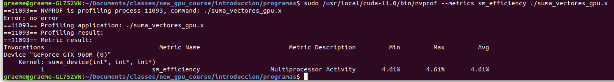
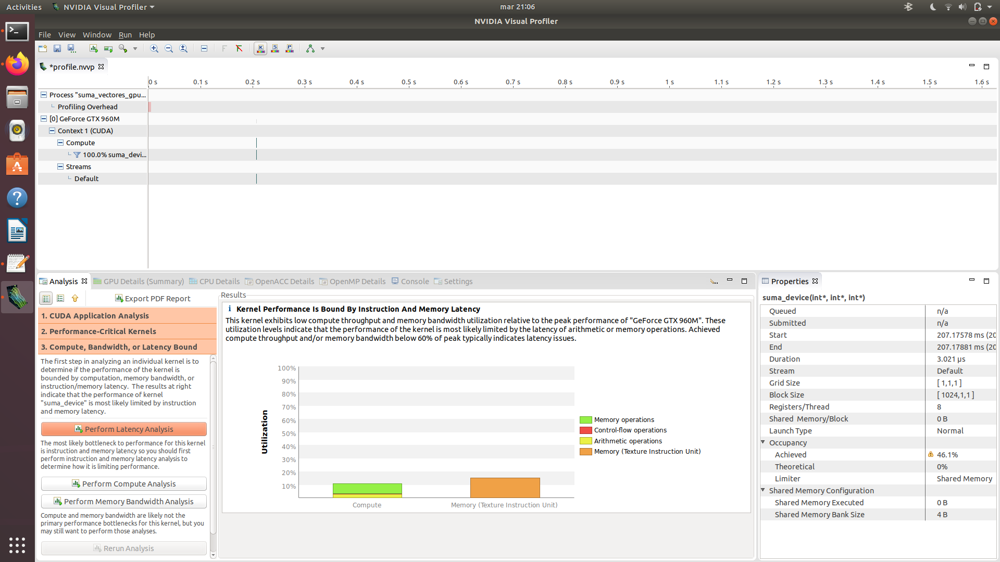
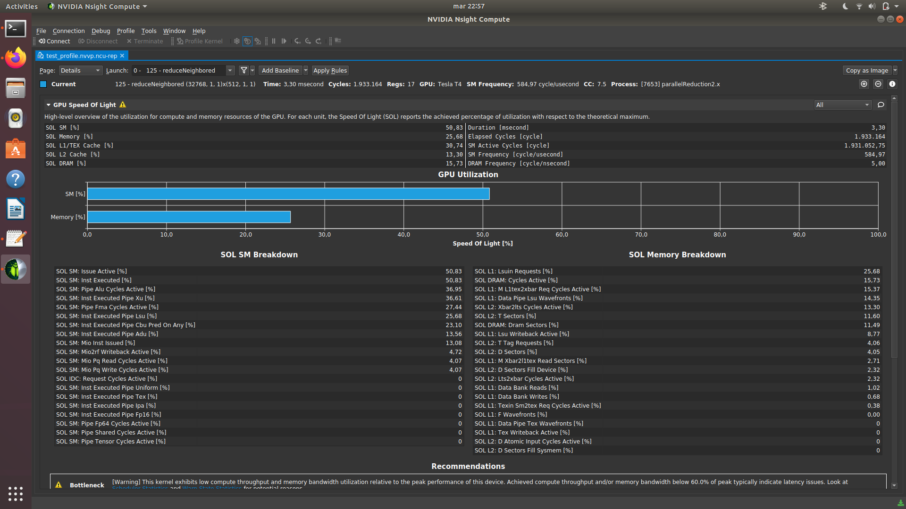

Optimización y Programación GPU
Lenguaje: CUDA/C (GPUs de NVIDIA)
Información sobre el curso
- Libros:
- Learn CUDA Programming, Han, Sharma
- Professional CUDA C Programming, Cheng, Grossmann, McKercher
- Parallel Programming: Concepts and Practice, Schmidt, Gonzalez-Dominguez, Hundt, Schlarb
- Hands On GPU Programming with Python and CUDA, Tuomanen
- El lenguaje del curso es CUDA/C, pero veremos un poco sobre como interactuar con CUDA a través de Python.
- Los horarios de las clases son lunes 10.15-11.15, miercoles 10.15-11.15.
- Evaluaciones: 1 prueba (25%), 2 tareas (25% cada una), proyecto final (25%)
Programa
- Introducción a CUDA
- Prueba (Evaluación 1)
- El uso de la memoria del GPU
- Control de los threads
- Tarea (Evaluación 2)
- Invocación de los kernels
- Librerias de CUDA y Python
- Tarea (Evaluación 3)
- Aplicaciones (Nbody, ray-tracing, OpenGL)
- Proyecto final (Deep Learning, Evaluación 4)
Códigos
Cada capítulo tiene una carpeta que contiene programas de ejemplo.
Introducción a CUDA
Introducción

Introducción
Programación heterogénea
GPU Hardware
Compute capability
CPU vs GPU
Acelerando un código
Thread del GPU vs thread del CPU
- Threads en el CPU son "pesados": context switching es costoso.
- Los cores del CPU minimizan latency para uno o dos threads.
- Un CPU con 4 procesadores de quad-core puede ejecutar 16 threads al mismo tiempo (32 si hyper-threading está habilitado).
- Threads en el GPU son "livianos": miles disponibles, context switching es rápido.
- Los cores del GPU manejan muchos threads para maximizar throughput.
- Los GPUs modernos permiten 1536 threads activos por multiprocesador. Ejemplo: GPU con 16 multiprocesadores, $> 24000$ threads activos al mismo tiempo.
Un poco de jerga
- Thread: secuencia de instrucciones, manejada por un scheduler (planificador, componente que reparte el tiempo disponible de un procesador entre los threads/procesos).
- Context switching: cambio de contexto de un thread, basicamente parar la operación de un thread para permitir la operación de otro.
- Latency (latencia): retraso entre la emisión de una instrucción y la transferencia de datos pedidos por la instrucción.
- Throughput: la cantidad de datos que pasan a través de una red de comunicación en cierto unidad de tiempo (típicamente medido en GB/s)
- Bandwidth: el máximo teórico del throughput para una red de comunicación.
NVCC Compiler

- Código del host: corre en el CPU
- Código del device: corre en el GPU
¿Tengo un GPU?
- En el shell de Linux:
nvidia-smi - También se puede usar
lspci | grep NVIDIA
Primer programa de CUDA
¡Hola Mundo! con CUDA
Ejemplo 1: hola_mundo.cu
Compilar con nvcc -arch=sm_50 hola_mundo.cu -o hola_mundo.x
Argumento para la opción -arch dependerá del GPU usado.
Un programa más útil
Suma de vectores

Suma de vectores: host
Ejemplo 2a: suma_vectores_host.c
Compilar con gcc suma_vectores_host.c -o suma_vectores_host.x
Suma de vectores: device
Ejemplo 2b: suma_vectores_gpu.c
nvcc -arch=sm_50 suma_vectores_gpu.c -o suma_vectores_gpu.x
Suma de vectores: device
Suma de vectores: device
cudaMalloc: asignar memoria en el device.
cudaMemcpy: copiar datos entre el host y el device (en ambas direcciones).
Funciones de manejo de memoria en la documentación del CUDA Runtime API
Kernels
Utilizando el GPU
Para realizar un trabajo en el GPU, hay que invocar un kernel.
Un kernel es simplemente una función que corre en el GPU, con ciertas restricciones.
__global__ void nombre_kernel(...){
// cuerpo de la función
}Utilizando el GPU
Para invocar el kernel escribimos:
nombre_kernel<<< N, M >>>(...)Los valores de $N$ y $M$ controlan el número de threads que el kernel utiliza.
Restricciones para los kernels
- Acceso a la memoria del device solamente.
- Tipo de retorno debe ser
void. - No se puede usar un número variable de argumentos.
- No se puede usar variables estáticas.
- No se puede usar punteros a funciones.
- Corren asincrónicamente.
Organización de los threads

- Todos los threads utilizados en un kernel constituyen un grid y comparten un espacio de memoria global del GPU.
- Un grid está compuesto de bloques de threads. Cada bloque tiene un espacio de memoria compartida.
- Los threads tienen coordenadas únicas:
blockIdx(indice del bloque dentro del grid) ythreadIdx(indice del thread dentro del bloque).
Organización de los threads
Se puede organizar los threads en 1D, 2D o 3D.
Los coordenadas son un tipo vector uint3 (device) definido en CUDA:
blockIdx.x, blockIdx.y, blockIdx.z
threadIdx.x, threadIdx.y, threadIdx.z
En el device se puede acceder a las dimensiones del grid y los bloques con:
blockDim.x, blockDim.y, blockDim.z (medidos en threads)
gridDim.x, gridDim.y, gridDim.z (medidos en bloques)
Organización de los threads
Las dimensiones del grid y bloques están especificadas con el tipo dim3 (host):
dim3 bloques (bx,by,bz);
dim3 grid (gx,gy,gz);Si queremos una distribución bidimensional, ponemos $1$ para la dimensión $z$ (o ponemos solamente $2$ valores):
dim3 bloques (bx,by);
dim3 grid (gx,gy);Organización de los threads
En el momento de invocar el kernel hay que especificar el número de bloques y el número de threads en cada bloque:
nombre_kernel<<< N, M >>>(...)$N$ corresponde al número de bloques que queremos usar. $M$ corresponde al número de threads dentro de cada bloque.
Organización de los threads
Si estamos usando bloques de 2D o 3D, podemos usar los vectores que vimos antes, por ejemplo:
dim3 bloques (bx,by,bz);
dim3 grid (gx,gy,gz);
nombre_kernel<<< grid, bloques >>>(...)Importante!
Hay un límite de $1024$ threads por bloque! No importa si usamos 1D, 2D o 3D, el límite es igual.
Por lo tanto, en 1D podemos usar $1024$ threads en la dirección $x$.
En 2D podemos usar $32$ threads en $x$ y el mismo número en $y$.
En 3D podemos usar, por ejemplo, $16$ threads en $x$ y $y$, $4$ threads en $z$. ($16 \times 16 \times 4 = 1024$).
Es muy fácil cometer el error de usar demasiados threads por bloque, y es muy difícil detectar el problema! (Veremos más sobre errores en un momento).
Organización de los threads: ejemplo
Ejemplo 3: mostrarIndices.cu
Compilar con nvcc -arch=sm_50 mostrarIndices.cu -o mostrarIndices.x
Warps, bloques, grids
Los threads trabajan en grupos de $32$ nombrados warps.
Dependiendo del número de threads por bloque, cada bloque tendrá multiples warps.
Los threads en un warp están sincronizados implícitamente.
Todos los threads en un bloque tienen acceso a un espacio de memoria compartida.
No hay comunicación entre threads en distintos bloques.
Diseño de los kernels
- Los kernels están basados en el model SPMD (single program multiple data)
- Un kernel corresponde a código escalar para un sólo thread.
- La invocación del kernel resulta en muchos threads realizando la misma operación como está definida en el kernel.
Variedades de funciones en CUDA
__global__: ejecuta en el device, se puede llamar desde el host y el device (para compute capability mayor que $3$).__host__: ejecuta en el host, se puede llamar desde el host (típicamente no es necesario especificar una función así)__device__: ejecuta en el device, se puede llamar desde el device.- Se puede compilar una función tanto para el host como para el device combinando
__host__y__device__.
Suma de vectores (de nuevo)
void suma_host(int *a, int *b, int *c) {
for(int idx=0;idx<N;idx++)
c[idx] = a[idx] + b[idx];
}Suma de vectores (de nuevo)
__global__ void suma_device(int *a, int *b, int *c) {
int idx = threadIdx.x + blockIdx.x * blockDim.x;
c[idx] = a[idx] + b[idx];
}No hay ciclo for, las coordenadas de los threads reemplazan el índice del ciclo y N está definida implícitamente cuando lanzamos el kernel con N threads.
Por ejemplo, para 32 elementos, se puede invocar el kernel con: suma_device<<<1,32>>>(d_a, d_b, d_c);
Errores
Manejando errores
Siempre hay errores en un programa...
El problema con CUDA es que es un poco difícil detectar errores.
Todas las funciones del API de CUDA devuelven un número (un enum) que corresponde a algún tipo de error.
Se puede llamar las funciones así (un ejemplo):
cudaError_t err = cudaMemcpy(...);
cudaGetErrorString(err);Manejando errores
Otra forma (mejor) es usar un macro:
#define CHECK(llamada) \
{ \
const cudaError_t err = call; \
if (err != cudaSuccess) \
{ \
printf("Error: %s:%d, ", __FILE__, __LINE__); \
printf("codigo de error:%d, mensaje: %s\n", err, cudaGetErrorString(err)); \
exit(1); \
} \
}Referencia sobre el uso de macros en C.
Manejando errores
Es importante notar que la invocación de un kernel no devuelve nada!
Por este razón, si el kernel falla no aparece ningún mensaje de error.
Un ejemplo: invocación de un kernel con demasiados threads.
suma_device<<<1,2048>>>(d_a,d_b,d_c);Manejando errores
En este caso se puede usar la función cudaGetLastError.
suma_device<<<1,2048>>>(d_a,d_b,d_c);
cudaError_t err = cudaGetLastError();
if (err != cudaSuccess) printf("Error: %s\n",cudaGetErrorString(err));Manejando errores
Información sobre el manejo de errores de la documentación del API.
Profiling
Profiling (perfilaje)
- Hay programas que se llaman profilers que dan información sobre la ejecución de un código (tiempo para cada función, utilización de memoria, etc.)
- Para CUDA hay:
nvprof: apto para GPUs de compute capability $< 7$. Da información sobre utilización de recursos y tiempo de ejecución de funciones del API.ncu: apto para GPUs de compute capability $\geq 7$. Solamente da información sobre la utilización de recursos del GPU, transferencias con la memoria, etc.nsys: también para GPUs de CC $\geq 7$. Da información del tiempo de ejecución de las funciones.
nvprof
nvprof
Información sobre las opciones: nvprof --help.
Para información sobre el uso de recursos del GPU, se puede usar métricas. Usaremos varios durante el curso.
Para ver las métricas disponibles usamos nvprof --query-metrics.
nvprof
Profilers visuales: NVVP
Se puede obtener de los profilers un archivo con la información para abrir en programas con GUI (graphical user interface)
Para nvprof: nvprof --export-profile profile.nvvp --analysis-metrics ./nombre_programa
Después se puede abrir el archivo profile.nvvp con NVVP (NVIDIA Visual Profiler)
Profilers visuales: NVVP
Profilers visuales: NSight Compute
Para los GPUs de CC $\geq 7$ hay NSight Compute y NSight Systems.
ncu -o informacion ./nombre_programa.x guarda un archivo informacion.ncu-rep.
Se puede abrir este archivo en NSight Compute (ncu-ui)
Para ver información en la pantalla: ncu --metrics <nombre de la métrica> ./nombre_archivo.x (una lista de métricas disponibles: ncu --query-metrics).
Profilers visuales: NSight Compute
Profilers visuales: NSight Systems
nsys profile ./nombre_programa.x guarda un archivo report.qdrep.
Se puede abrir este archivo en NSight Systems (nsys-ui)
nsys profile --stats=true ./nombre_programa.x produce información en la pantalla similar a lo que produce nvprof.
Profilers visuales: NSight Compute

nvprof/ncu
ncu es más complejo que nvprof (los GPUs modernos también son más complejos!)
No hay una relación uno-a-uno de las métricas, pero hay una tabla en el sitio de NVIDIA que compara las métricas: https://docs.nvidia.com/nsight-compute/NsightComputeCli/index.html#nvprof-guide
Acotado por el computo o la memoria?
Una de las razones más básicas por usar un profiler es encontrar si el programa está acotado por el computo (compute bound) o acotado por la memoria (memory bound).
Compute bound: el rendimiento del programa está limitado por la rapidez de las operaciones aritméticas/matemáticas del GPU.
Memory bound: el rendimiento del programa está limitado por la rapidez de la comunicación con la memoria del GPU.
Casi siempre los programas de computación científica son memory bound.
En el próximo capítulo veremos como podemos mejorar el uso de la memoria...
Encontrar información sobre el GPU en el sistema
- Con el mismo API de CUDA:
cudaGetDeviceProperties(ejemplo 4:simpleDeviceQuery.cu). - En el shell de Linux:
nvidia-smi - También
lspci | grep NVIDIA
Información en la documentación sobre device management.